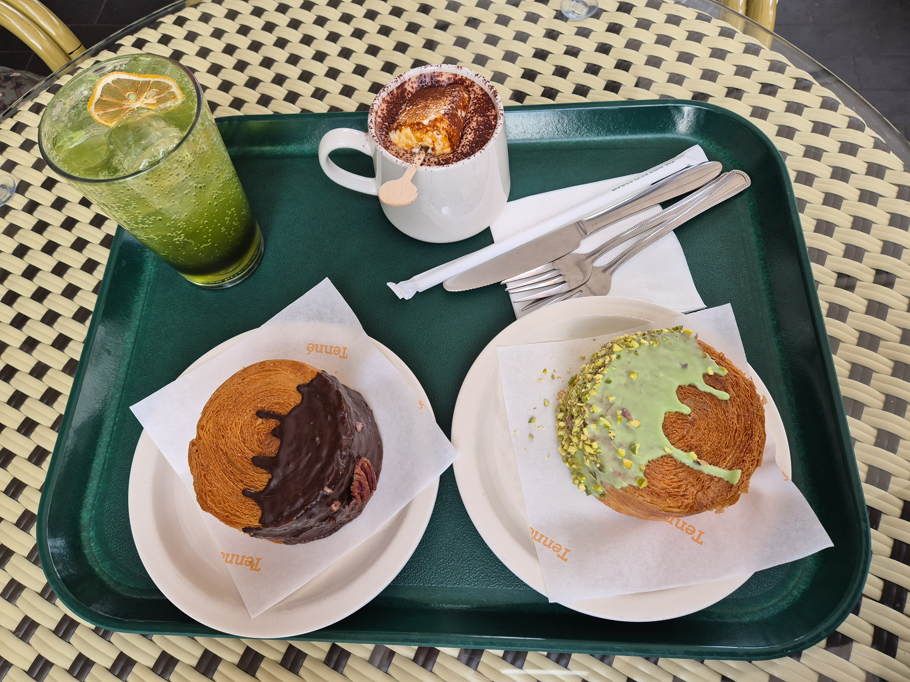
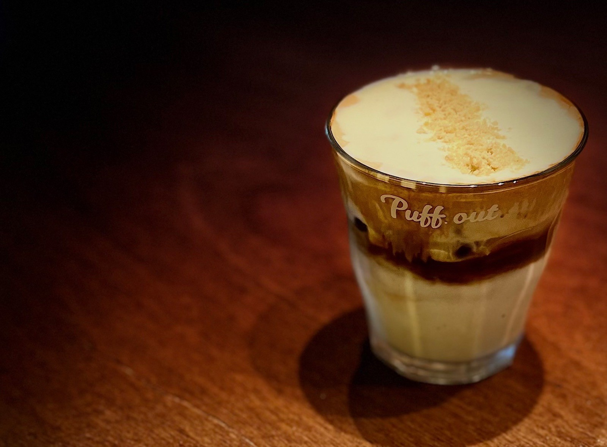
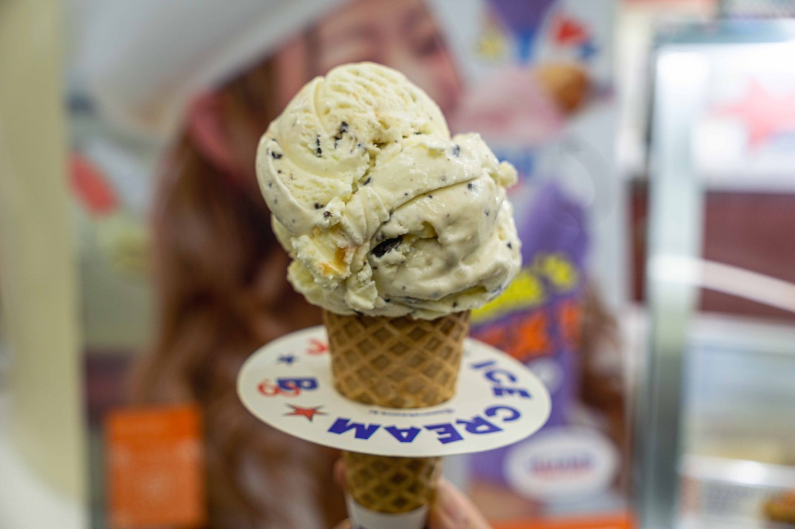

테니
무조건 먹어야 하는 음료수는 수제 마시멜로 초코 라떼다. 초코라떼가 너무 진해서 양송이 수프맛이 난다.
무조건 먹어야 하는 디저트는 퀸아망과 플랑이 있다. 퀸아망은 기본이 아닌 뉴욕롤, 그 중 피스타치오&라즈베리가 최고이다. 플랑은 몽블랑 플랑이 고급진 맛이 나고 존맛탱구리다.

퍼프아웃
커피를 못먹는데 가는 커피숍이다. 크림이 올라간 대표메뉴를 꼭 스푼으로 떠먹어야 먹어야 한다. 밤에 가면 실내 분위기도 더 좋아져서 감성적으로 커피를 마실 수 있다.
Go somewhere

>